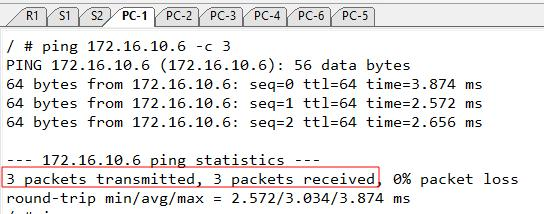

Router on a Stick


En este proyecto realizaremos el uso del método de ROAS (Router on a Stick) que nos permitirá la comunicación entre vlans. Para eso se ha creado 5 vlans, vlan 10,20 y 30 que son vlans de datos. La vlan 99 que es la vlan de administración y la vlan nativa que es el tráfico que no se etiquetará en los enlaces troncales. El router R1 será el gateway para cada vlan. Crearemos las subinterfaces en el router y haremos uso del protocolo 802.1Q para etiquetar las vlans.
Primero pasaremos a configurar los switches. Empezamos por el S1. Para empezar empezamos nombrando a las vlans tal como se muestra en la topología general.
S1(config)#vlan 10
S1(config-vlan)#name LOGISTICA
S1(config-vlan)#vlan 20
S1(config-vlan)#name MARKETING
S1(config-vlan)#vlan 30
S1(config-vlan)#name VENTAS
S1(config-vlan)#vlan 99
S1(config-vlan)#name ADMINISTRACION
S1(config-vlan)#vlan 100
S1(config-vlan)#name NATIVE
S1(config-vlan)#exit
Luego asignamos las interfaces a la VLAN correspondiente. Tal como se muestra en la topología general se ha identificado a cada VLAN por un color. Por ejemplo la interface g0/0 será asignado a la vlan 10 (en donde se encuentra PC-1). Igualmente hacemos lo mismo con las demás interfaces. Recordar que el puerto se tiene que configurar en modo de acceso.
S1(config)#interface g0/0
S1(config-if)#switchport mode access
S1(config-if)#switchport access vlan 10
S1(config-if)#exit
S1(config)#interface g0/1
S1(config-if)#switchport mode access
S1(config-if)#switchport access vlan 20
S1(config-if)#exit
S1(config)#interface g0/2
S1(config-if)#switchport mode access
S1(config-if)#switchport access vlan 30
S1(config-if)#exit
Verificamos las vlans recién creadas, en el gráfico aún no se muestra la vlan de administración. Eso se realizará después.
Ahora pasamos a configurar las interfaces en los enlaces troncales g0/3 y g1/0. No olvidemos establecer la vlan nativa en los enlaces troncales.
S1(config)#interface range g1/0, g0/3
S1(config-if-range)#switchport trunk encapsulation dot1q
S1(config-if-range)#switchport mode trunk
S1(config-if-range)#switchport trunk native vlan 100
S1(config-if-range)#exit
Verificamos la configuración del enlace troncal en S1.
Ahora creamos las vlans en el S2:
S2(config)#vlan 10
S2(config-vlan)#name LOGISTICA
S2(config-vlan)#vlan 20
S2(config-vlan)#name MARKETING
S2(config-vlan)#vlan 30
S2(config-vlan)#name VENTAS
S2(config-vlan)#vlan 99
S2(config-vlan)#name ADMINISTRACION
S2(config-vlan)#vlan 100
S2(config-vlan)#name NATIVE
S2(config-vlan)#exit
Asignamos las interfaces a la VLAN correspondiente según la topología.
S2(config)#int g0/0
S2(config-if)#sw mo acc
S2(config-if)#sw acc vlan 10
S2(config-if)#int g0/1
S2(config-if)#sw mo acc
S2(config-if)#sw acc vlan 20
S2(config)#int g0/2
S2(config-if)#sw mo acc
S2(config-if)#sw acc vlan 30
S2(config-if)#exit
Ahora pasamos a configurar la interface troncal de S2 que está conectada a S1.
S2(config)#interface g0/2
S2(config-if)#switchport trunk encapsulation dot1q
S2(config-if)#switchport mode trunk
S2(config-if)#switchport trunk native vlan 100
S2(config-if)#exit
Pasamos a configurar la SVI de administración en ambos switches, así como también su puerta de enlace.
S1(config)#interface vlan 99
S1(config-if)#ip address 172.16.99.10 255.255.255.240
S1(config-if)#no shutdown
S1(config-if)#exit
S1(config)#ip default-gateway 172.16.99.1
S1(config-if)#exit
S2(config)#interface vlan 99
S2(config-if)#ip add 172.16.99.11 255.255.255.240
S2(config-if)#no shutdown
S2(config-if)#exit
S2(config)#ip default-gateway 172.16.99.1
S2(config)#exit
Pasamos a crear las subinterfaces en el router. La dirección IP de cada interface será el gateway de cada dispositivo. Notamos que se le antepone el comando encapsulation dot1q, eso es para que etiquete la trama correspodiente a la VLAN. 802.1q es el protocolo o etiqueta que se le añade a la cabecera de la trama para que sea identificado en los enlaces troncales.
R1(config)#interface g0/0.10
R1(config-subif)#encapsulation dot1Q 10
R1(config-subif)#ip add 172.16.10.1 255.255.255.240
R1(config-subif)#exit
R1(config)#interface g0/0.20
R1(config-subif)#encapsulation dot1Q 20
R1(config-subif)#ip add 172.16.20.1 255.255.255.240
R1(config-subif)#exit
R1(config)#interface g0/0.30
R1(config-subif)#encapsulation dot1Q 30
R1(config-subif)#ip add 172.16.30.1 255.255.255.240
R1(config-subif)#exit
R1(config)#interface g0/0.99
R1(config-subif)#encapsulation dot1Q 99
R1(config-subif)#ip add 172.16.99.1 255.255.255.240
R1(config-subif)#exit
R1(config)#interface g0/0.100
R1(config-subif)#encapsulation dot1Q 100 native
R1(config-subif)#exit
R1(config)#interface g0/0
R1(config-if)#no shutdown
Comprobando la configuración de las interfaces.
Los clientes obtendrán la IP gracias a que configuraremos el router como servidor DHCP. Para eso creamos el pool de direcciones para cada vlan (10, 20, 30). Excluimos las 5 primeras vlans. Establecemos la red, gateway y el DNS.
R1(config)#ip dhcp excluded-address 172.16.10.1 172.16.10.5
R1(config)#ip dhcp excluded-address 172.16.20.1 172.16.20.5
R1(config)#ip dhcp excluded-address 172.16.30.1 172.16.30.5
R1(config)#ip dhcp pool VLAN10
R1(dhcp-config)#network 172.16.10.0 255.255.255.240
R1(dhcp-config)#default-router 172.16.10.1
R1(dhcp-config)#dns-server 8.8.8.8
R1(dhcp-config)#exit
R1(config)#ip dhcp pool VLAN20
R1(dhcp-config)#network 172.16.20.0 255.255.255.240
R1(dhcp-config)#default-router 172.16.20.1
R1(dhcp-config)#dns-server 8.8.8.8
R1(dhcp-config)#exit
R1(config)#ip dhcp pool VLAN30
R1(dhcp-config)#network 172.16.30.0 255.255.255.240
R1(dhcp-config)#default-router 172.16.30.1
R1(dhcp-config)#dns-server 8.8.8.8
R1(dhcp-config)#exit
Verificamos las direcciones asignadas a los clientes con el comando show ip dhcp binding en el router.
Ahora en la consola de los hosts haremos las pruebas correspondientes. Por ejemplo probamos conectividad entre PC-1 (172.16.10.7) y PC-4 (172.16.10.6) que pertenecen a VLAN 10.
Ahora probaremos de la misma PC-1 VLAN10 (172.16.10.7) hacia la PC-5 (172.16.30.6)que pertenece a la VLAN30. Como están en diferentes VLANs, PC-1 mandará la trama al gateway y del gateway a PC-5. El router es el que se encarga de enrutar entre vlans.